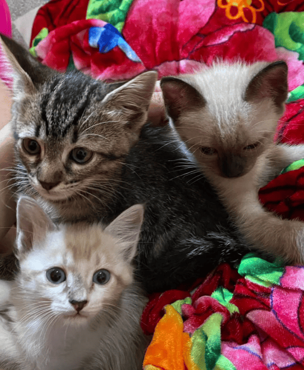
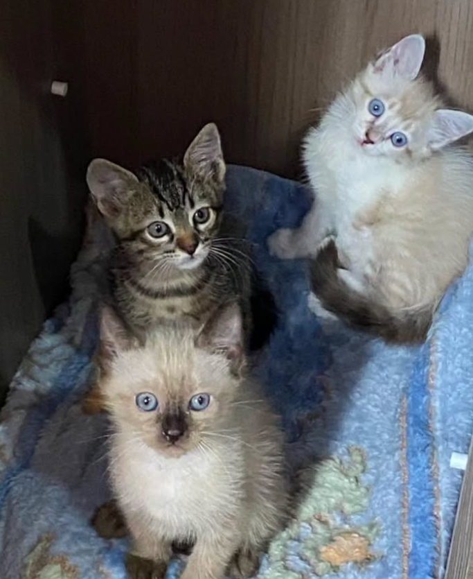

Projeto Aconchego Felino


Este projeto visa oferecer abrigo temporário e cuidados veterinários a gatos resgatados das ruas, preparando-os para adoção responsável.
Este projeto visa oferecer abrigo temporário e cuidados veterinários a gatos resgatados das ruas, preparando-os para adoção responsável.
Uma ação contínua para conectar nossos gatinhos com famílias amorosas. Também arrecadamos ração e medicamentos para os abrigos parceiros.
Quer fazer parte da nossa equipe? Temos oportunidades em áreas como resgate, social media, eventos e cuidados diários.
Suas doações nos ajudam a manter o abrigo e cuidar de dezenas de gatos resgatados todos os meses.